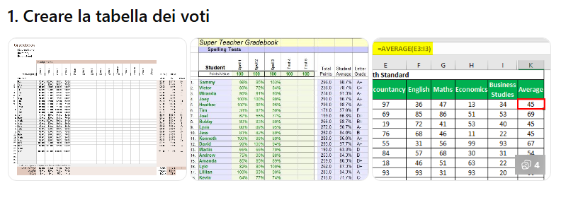
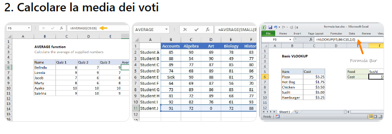
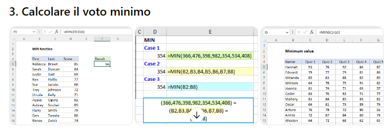

In questo esercizio imparerai a utilizzare le funzioni statistiche di base in Excel per analizzare un set di dati (in questo caso, i voti di una classe).
Queste funzioni sono fondamentali per analizzare rapidamente risultati scolastici, trend di vendita o qualsiasi lista di dati numerici.
Inserisci i titoli nella prima riga e i dati degli studenti nelle righe successive:
| Cella | A (Studente) | B (Voto) |
| 2 | Luca | 28 |
| 3 | Maria | 30 |
| 4 | Paolo | 24 |
| 5 | Anna | 27 |
| 6 | Giulia | 29 |

La media indica il valore centrale di tutti i voti inseriti.
Excel sommerà i voti e li dividerà per il numero degli studenti automaticamente, restituendo 27,6.

Utilizziamo le funzioni di ricerca automatica per individuare gli estremi della nostra lista.
| Obiettivo | Cella | Formula |
| Voto Minimo | B9 | =MIN(B2:B6) |
| Voto Massimo | B10 | =MAX(B2:B6) |

Se le formule sono state inserite correttamente, la tua sezione calcoli dovrebbe apparire così:
| Descrizione | Valore |
| Media dei voti | 27,6 |
| Voto più basso | 24 |
| Voto più alto | 30 |
Con questo esercizio hai imparato a padroneggiare le funzioni di sintesi: